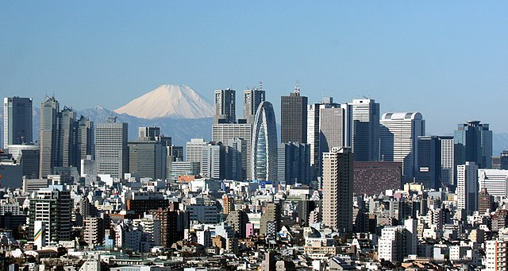

Erste Eindrücke von Tokyo
5. Juli 2018
Nach einem langen Flug bin ich endlich in Tokyo angekommen. Die Stadt ist ein faszinierender Mix aus Tradition und Moderne. Schon bei der Fahrt vom Flughafen in die Stadt konnte ich die beeindruckenden Wolkenkratzer und die traditionellen Tempel sehen.
Mein erster Stopp war der berühmte Shibuya-Kreuzung. Die Menschenmassen, die sich bei jedem Ampelwechsel über die Straße bewegen, sind überwältigend. Es ist ein Ort voller Energie und Leben, und ich habe mich einfach in die Menge gestürzt und die Atmosphäre aufgesogen.
Am nächsten Tag besuchte ich den Senso-ji Tempel in Asakusa. Der Kontrast zwischen dem alten Tempel und den modernen Gebäuden ringsum ist faszinierend. Ich habe die Ruhe und den Frieden des Tempels genossen und die vielen kleinen Läden in der Nähe erkundet.
Natürlich durfte auch ein Besuch des Tokyo Tower nicht fehlen. Von der Aussichtsplattform hatte ich einen atemberaubenden Blick über die ganze Stadt. Die Lichter der Stadt bei Nacht sind einfach magisch.
Tokyo hat so viel zu bieten und ich freue mich darauf, in den nächsten Tagen noch mehr von dieser unglaublichen Stadt zu entdecken. Von den traditionellen Teehäusern über die modernen Einkaufszentren bis hin zu den versteckten Ecken in den verschiedenen Stadtteilen – es gibt immer etwas Neues zu erleben.
Hinweis: Dieser Text wurde mit Hilfe von GitHub Copilot (GPT 4o) generiert.